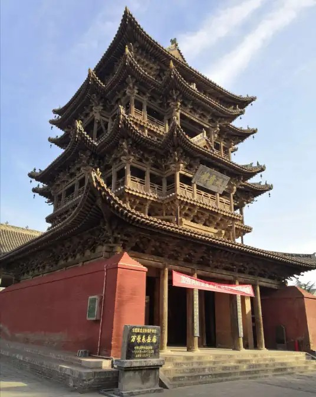

飞云楼 |
返回主页 |  | |
| 飞云楼，位于山西省运城市万荣县西大街8号万荣东岳庙内，始建于明正德年间，是中国纯木质楼阁建筑的代表作，被誉为“中华第一木楼”，与佛宫寺释迦塔一起被称为“南楼北塔”。 飞云楼为万荣东岳庙主要建筑之一，坐北朝南，平面呈方形，明三层暗五层，高23.19米，十字歇山顶。飞云楼在建造技术结构力学与造型艺术方面独具特色，在中国木构建筑中占有独特地位，体现了中国古代建筑技艺的水平，具有重要的历史价值。 1988年1月13日，包含飞云楼在内的万荣东岳庙被中华人民共和国国务院公布为第三批全国重点文物保护单位。 |
|||